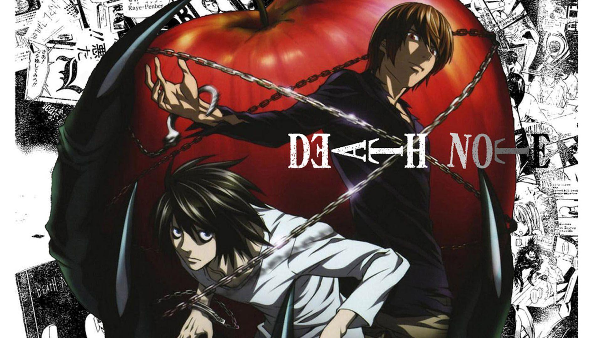
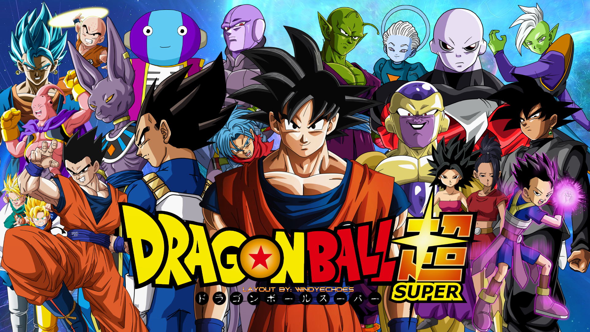

Attack on Titan
TV
24 min
Centuries ago, mankind was slaughtered to near extinction by monstrous humanoid creatures called Titans, forcing humans to hide in fear behind enormous concentric walls. What makes these giants truly terrifying is that their taste for human flesh is not born out of hunger but what appears to be out of pleasure. To ensure their survival, the remnants of humanity began living within defensive barriers, resulting in one hundred years without a single titan encounter.

Haikyuu!!
TV
24 min
Ever since having witnessed the "Little Giant" and his astonishing skills on the volleyball court, Shouyou Hinata has been bewitched by the dynamic nature of the sport. Even though his attempt to make his debut as a volleyball regular during a middle school tournament went up in flames, he longs to prove that his less-than-impressive height ceases to be a hindrance in the face of his sheer will and perseverance.

Death Note
TV
24 min
Brutal murders, petty thefts, and senseless violence pollute the human world. In contrast, the realm of death gods is a humdrum, unchanging gambling den. The ingenious 17-year-old Japanese student Light Yagami and sadistic god of death Ryuk share one belief: their worlds are rotten.

Hunter X Hunter
TV
24 min
Hunters devote themselves to accomplishing hazardous tasks, all from traversing the world's uncharted territories to locating rare items and monsters. Before becoming a Hunter, one must pass the Hunter Examination—a high-risk selection process in which most applicants end up handicapped or worse, deceased.
Demon Slayer
TV
24 min
Ever since the death of his father, the burden of supporting the family has fallen upon Tanjirou Kamado's shoulders. Though living impoverished on a remote mountain, the Kamado family are able to enjoy a relatively peaceful and happy life. One day, Tanjirou decides to go down to the local village to make a little money selling charcoal.

Kaguya-sama: Love is War
TV
24 min
At the renowned Shuchiin Academy, Miyuki Shirogane and Kaguya Shinomiya are the student body's top representatives. Ranked the top student in the nation and respected by peers and mentors alike, Miyuki serves as the student council president. Alongside him, the vice president Kaguya—eldest daughter of the wealthy Shinomiya family—excels in every field imaginable. They are the envy of the entire student body, regarded as the perfect couple.

Dragon Ball Super
TV
24 min
Seven years after the events of Dragon Ball Z, Earth is at peace, and its people live free from any dangers lurking in the universe. However, this peace is short-lived; a sleeping evil awakens in the dark reaches of the galaxy: Beerus, the ruthless God of Destruction.
